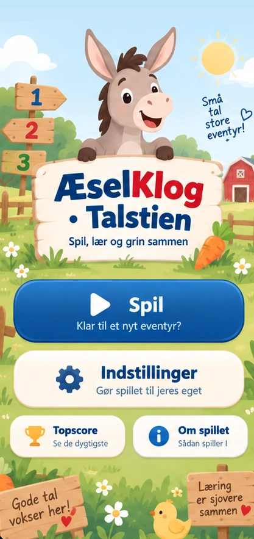

1
Ulige
0 tiere + 1 ener
★ Primtal
1

Talstien kan spilles både med eller uden læringsopgaver. 🥕
Vælg spillemåde, terninger, talområde og stemmer. Valgene gemmes automatisk på denne enhed.
Vælg én tabel eller en blanding. I TABELTRÆNING kommer regneopgaven hver tur (uden læringsterning). 3–6-årige får stadig lette opgaver. I LEG er matematik frivillig.
Ingen lokale læringsprofiler endnu.
Gælder alle voksne i næste spil. Børn har ingen tidspres.
CPU venter på oplæsning og æsellyd, inden næste handling. Indstillingen gælder hele spillet.
Når I bruger fysiske terninger, fortæller I appen resultatet ved at trykke. Kameraaflæsning kan komme senere.
Automatisk foretrækker den originale ÆselKlog-stemme, når den er godkendt i Cloudflare. Ellers vælges en alternativ tilgængelig stemme. Begge spil bruger samme valg.
Cloudflare-forbindelsen er indbygget – ingen adresse eller API-nøgle skal indtastes. Vælg stemme, og prøv den.
Mia er standardstemme. Henter flere stemmer…
Kun stemmer godkendt af ÆselKlogs sikre stemmetjeneste vises. Tale sendes til ElevenLabs via Cloudflare; brug gerne kaldenavne til børn.
Ofte brugte, faste sætninger gemmes automatisk for hver valgt stemme. Det sparer credits og kan virke offline. Børnenavne og personlige oplæsninger gemmes ikke her.
Kontrollerer lokalt lydlager…
Finder danske stemmer…
Telefonstemmen virker uden internet. Mia er standardvalget, og AI-stemmer kræver internet. Hvis ElevenLabs ikke svarer, skifter spillet til telefonens stemme.
Dansk er standard. De fem faste stemmer bruger MP3-optagelser, som hentes efter behov og gemmes til offlinebrug. Uden en hentet MP3 kan den eksisterende stemme bruges som reserve.
Tallyde hentes automatisk, når de bruges. Du kan også hente alle 500 optagelser nu (omkring 10 MB). De gemmes på denne enhed, indtil browseren eventuelt rydder sin cache.
Kontrollerer offline-lydlager…
Tre børnevenlige CC0-musiknumre, der gemmes offline i appen. Musikken virker i begge spil og dæmpes under tale. Se musikrettigheder i MUSIC-LICENSES.md.
Op til 6 spillere samt eventuelt CPU-æslet.
Bladr gennem tallene og hør dem på dit valgte sprog. Helt uden spilregler.
Optag dit tal og sammenlign det med ÆselKlogs rigtige oplæsning. Optagelsen gemmes ikke på serveren.
Tallet bliver læst op, når kortet vises. Tryk Læs igen for at øve.
Et selvstændigt kortspil uden spilleplade og terning. Matematik er valgfri.

Vend talkort, byg rækkerne i midten og giv æselkort som straf ved fejl. I spiller sammen på denne enhed.
Hvert sæt indeholder fem kopier af hvert tal: 100 talkort. Det laveste tal begynder en række i midten.
I spiller på samme enhed og holder selv øje med hinandens træk.
Tryk på bunken for at vende. Træk kortet til en anden bunke.
Kortet går tilbage, hvis trækket var forkert. Straf gives derefter.
Ved en fejl i det seneste træk: brug æselkortet ovenfor for at fortryde og give straf. Denne ekstra mulighed giver kun en manuelt aftalt straf.
Flyt brikkerne på den trykte plade. Appen holder styr på tur, felter og opgaver, mens I bruger den terning, I har valgt.
Læg brikkerne ved START.
Denne tilstand bruger faste specialfelter i appen, ikke nye tilfældige felter. Se efter, at de svarer til jeres trykte A3-plade.
Træk med én finger for at se banen, knib med to fingre for at zoome, eller brug knapperne. Feltnumrene er altid synlige – også på actionfelter.